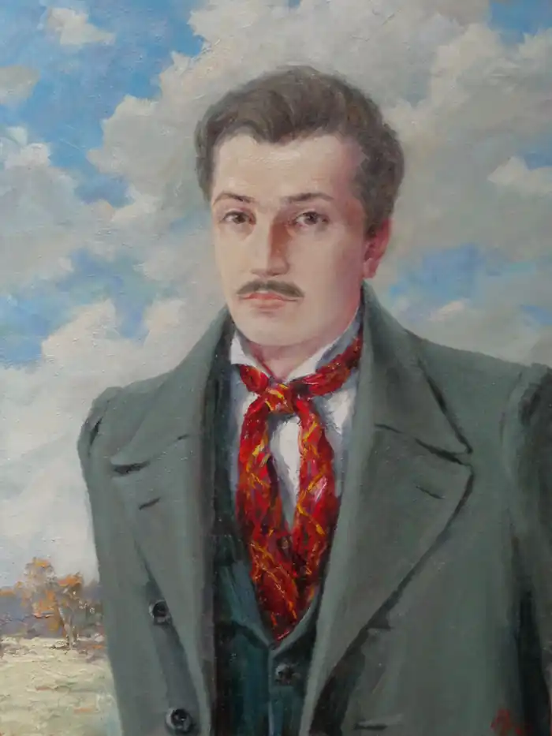
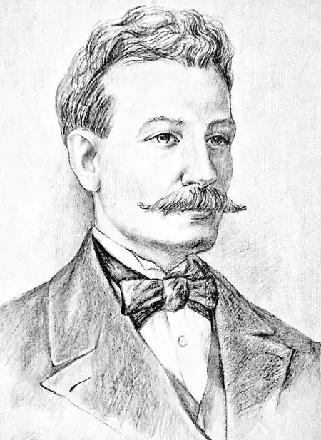

Михайло Миколайович Петренко – Поет і службовець.
Перш за все, Михайло Миколайович Петренко – поет Харківської школи романтиків першої половини ХІХ століття.
Поетична спадщина Михайла Петренка невелика, але деякі його вірші стали народними піснями, які пам'ятають і сьогодні. Вперше біографічні дані поета з'являються в літературі в 1848 році в "Южном русском зборнике", де видавець А. Метлинський повідомляє: "Петренко, Михайло Николаевичъ, родился въ 1817 году, и, большею частію, проживалъ и узналъ языкъ и бытъ народный въ городѣ Славянскѣ и его окрестностяхъ, Изюмскаго Уѣзда; окончилъ курсъ ученія въ 1841 году въ Харьковском Университетѣ, и потомъ опредѣлился на службу по гражданскому вѣдомству…". Незважаючи на відсутнисть будь-яких докуменів про місто народження Михайла Петренка, в літературі можна зустріти твердження, що він народився у Слов'янську, але це є результат невдалого прочитання деякими авторами наведеної фрази першого біографа Михайла Петренка (А. Метлинського), з якої ніяк не вітікає факт народження М. Петренка саме у Слов'янську. На сьогоднішній день, на жаль, документальних даних про життя Михайла Петренка виявлено небагато. Існує чимало біографічних описів, які надавалися в літературі на протязі більш ніж шістидесяти років, але вони побудовані лише на чутках, зібраних про деяких людей з прізвищем Петренко, які не мали жодного відношення до роду Петренків, представником якого є Михайло Миколайович. Михайло Петренко народився в Слобідсько-Українській губернії у 1817 році, проте, ще документально не доведено де саме він народився. Те, що Михайло Миколайович деякий час проживав у Слов'янську, сумнівів не викликає, хоча б тому, що його батько Микола Дмитрович Петренко, принаймні, з 1806 до 1822 року служив у Слов'янській міській ратуші. Ще невідомо де Михайло Петренко отримав початкову освіту, але, потім, Михайло вчився в Харкові. Скоріше за все навчання проходило в Харківській гімназії, та документально це теж ще не доведено. Лише з переписки сучасників Михайла Петренка відомо, що він брав активну участь у літературно-поетичному гуртку Писаревських, які виїхали з Харкова в 1833-му році (Тож, Михайло мешкав у Харкові вже до 1833 року). З 21 вересня 1837 року Михайла Петренко було зараховано до Імператорського Харківського університету на юридичний факультет, про що відомо зі списків студентів четвертого курсу юридичного факультету 1840-1841 навчального року (зберігаються в бібліотеці Харківського університету). У 1841 році він закінчив повний курс наук Імператорського Харківського університету зі ступенем дійсного студента, що свідчило про закінчення навчання без відзнаки. Скоріше за все, Михайло Петренко почав писати вірші ще в студентські роки. Вперше його вірші було надруковано в 1841-му році в поетичному альманасі "Сніпъ", який видавався О. Корсуном. В збірці під загальною назвою "Думки" було надруковано декілька віршів Поета: "Недоля" (Дивлюся на небо та й думку гадаю…), "Вечjрнjй дзвінъ" (Якъ в сумерки вечjрнjй дзвjнъ…), "Смута" (Чого ты, козаче, чого ты, бурлаче…), "По небу блакитнjмъ очjма блукаю…", "Гей, Иване! Пора…" (два вірші), "Брови" (Ой, бjда менj, бjда…) та "Туди мои очj, туди моя думка…". Поезії Михайла Петренка були доброзичливо прийняті критикою, про що свідчить, наприклад, рецензія М. Тихорського: "…Теперь не видать вамъ, господа, поэзіи въ Петербургѣ; г. Петренко до безумія влюбился въ Mademoiselle поэзію; M-lle поэзія очень неравнодушна къ M-r Петренко – слѣдственно они никогда не расстанутся… Думки поетъ не г. Петренко, а поэзія; что я васъ не обманываю, извольте посмотрѣть – вотъ, напримеръ Недоля…". Українська літературна збірка "Молодикъ" (1843), яку видавав І. Бецький, містила два вірші М. Петренка: "Вечиръ" (Зхилившись на руку, дивлюся я…) та "Батькивска могила" (Покинувъ насъ и нашу матиръ…). Третє відоме на сьогоднішній день прижиттєве видання віршів М. Петренка відбулося в "Южном русском зборнике" (1848), де вони були об'єднані в цикл "Думu та співu": "Думu мои, думu мои…", "Небо" (Дuвлюся на небо, та й думку гадаю…) (під цією назвою об'єднані три вірші), "Весна" (Весна, весна, годuна мuла…), "Славьянск" (Ось, ось Славьянск! Моя родuна…) (під цією назвою об'єднані чотири вірші), "Тебе не стане в сuх мистах…", "Тудu мои очи, тудu моя думка…", "Як в сумеркu вечирний дзвин…", "Ой бида мени, бида…", "Мuнулuся мои ходu…", "Чого тu, козаче, чого тu, бурлаче…", "Іван кучерявuй" (У недиленьку раненько…) і "Недуг" (Ходе хвuля по Осколу…). Слід додати, що на початку 1861-го році в невеличкій книзі "Holos na holos dlia Halyčyny" (це четверта відома публікація поезій Михайла Петренка видана ще за його життя), яка вийшла в Чернівцях, в циклі "Pisni", куди включено чотири твори без згадки прізвищ авторів, подано два вірші Михайла Петренка: Smuta "Čoho ty kozače, čoho ty burlače…" та Dumka (nedolia.) "Dyvliu sia na nebo taj dumku hadaju…". Видавцями ціє літературної збірки були ентузіасти української мови й письменства Антін Кобилянський та Кость Горбаль. На жаль, ще не знайдена, наприклад, драма "Панська любовъ", про яку згадували сучасники Михайла Петренка, але, нещодавно, в фондах Російської державної бібліотеки дослідницею життя і творчості Михайла Петренка зі Слов'янська В. Шабановою було знайдено рукопис першої дії (перші дві яви) драматичної думи Михайла Петренка "Найда", про яку ніколи не згадувалося в літературі. Тексти, датовані 20-м січня 1845 року, пролежали на полицях архіву бібліотеки багато десятиліть. Невідомо де був і чим займався Михайло Петренко деякий час після закінчення університету (до липня 1844), але з листування його сучасників відомо, що, наприклад, в 1843 році він мешкав у Харкові й писав вірші. Так, П. Кореницький в листі до О. Корсуна (4-го вересня 1843 року) повідомляв: "Петренковъ нашъ, кончаетъ уже свою драмму подъ заглавіемъ Паньска любовь, очень хорошую и занимательную піэсу; также написалъ онъ еще Словьянскй писни и Сауръ могилу и самъ отъ себя хочетъ издать…". У липні 1844 року Михайло Миколайович починає службу канцелярським чиновником у Харківській Палаті кримінального суду. В серпні 1847-го року його було переведено у Вовчанський повітовий суд на посаду секретаря. З липня 1849 року Михайла Петренка переведено на посаду повітового стряпчого в земському суді міста Лебедина. У січні 1853-го року Михайла Петренка було нагороджено чином титулярного радника за вислугу років. В 1856-му році Михайло Миколайовича нагороджено бронзовою медаллю "В память войны 1853-1856 гг.", але, слід зазначити, що участі у війні він не брав, про що йдеться в його формулярному списку 1858-го року. Скоріше за все, десь у 1848 році, Михайло Петренко одружився на дворянці Анні Євграфівні Миргородовій. Подружжя мешкало в м. Лебедині та в їх сім'ї народжувалося, принаймні, восьмеро дітей: — Микола, народився 16 серпня 1849 року. — Людмила, народилася 23 серпня 1851 року. — Варвара, народилася 16 січня 1853 року. — Марія, народилася 23 січня 1855 року. — Євграф, народився 20 квітня 1857 року. — Єлісавета, народилася 18 жовтня 1858 року. — Любов, народилася 26 січня 1860 року. — Михайло, народився 23 серпня 1861 року. З порівняння формулярних списків за різні роки встановлено, що дочки Людмила та Варвара померли в дитячому віці. Як вже згадувалося, Михайло Петренко служив повітовим стряпчим (штатна одиниця Міністерства юстиції) Лебединського земського суду (1849 – 1862), та підпорядковувався безпосередньо губернському прокуророві. В його обов'язки входило спостереження за порядком в будь-яких судових засіданнях, боротьба з хабарництвом в повіті, а також контроль за дотриманням законності по оподаткуванню населення та таке інше. Робота була серйозною та жодного відношення до романтики не мала. Може ці обставини, й деякі інші події, послужили підставою для завершення поетичної діяльності? В літературі інколи повідомляється про зустріч Михайла Петренка та Тараса Шевченка в Лебедині в червні 1859 року. Цьому питанню було присвячено декілька публікацій. Інформація про зустріч двох поетів потрапила й у Шевченківський словник, але, треба пам'ятати, що до сьогодні згадана зустріч документального підтвердження не має, хоча й наводяться в літературі різні обґрунтування. Помер повітовий стряпчий (прокурор) Михайло Миколайович Петренко в чині колезького асесора 25 грудня 1862 року у віці 45 років. Відспівували його у Миколаївській церкві міста Лебедин й поховали 27 грудня на "отведенном приходском кладбище". Лебединські краєзнавці та старожили говорять про поховання Михайла Петренка на кладовищі біля Покрівської церкви. Може так воно й є, проте, встановлення місця поховання Михайла Петренка потребує додаткових досліджень, які зараз і проводяться. Невідомі ще біографічні факти та поетична спадщина Михайла Миколайовича Петренка зараз досліджуються. Велика пошукова робота по життю й творчості Михайла Петренка проводиться в межах проекту "Ідентифікація Петренків". Результати пошуків оприлюднюються в наукових журналах, газетних та журнальних статтях, а також на сайті, присвяченому Михайлу Миколайовичу Петренку www.дивлюсьянанебо.com (c) Олександр Петренко для УкрЛібу.